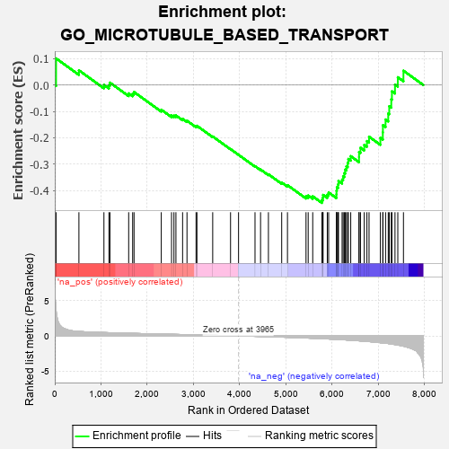
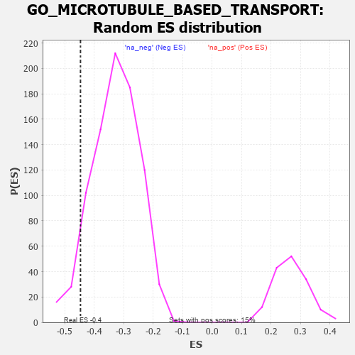

| | | Dataset | 7d |
| Phenotype | NoPhenotypeAvailable |
| Upregulated in class | na_neg |
| GeneSet | GO_MICROTUBULE_BASED_TRANSPORT |
| Enrichment Score (ES) | -0.4471039 |
| Normalized Enrichment Score (NES) | -1.3619497 |
| Nominal p-value | 0.06501182 |
| FDR q-value | 0.38819632 |
| FWER p-Value | 1.0 |
Table: GSEA Results Summary

Fig 1: Enrichment plot: GO_MICROTUBULE_BASED_TRANSPORT
Profile of the Running ES Score & Positions of GeneSet Members on the Rank Ordered List
| PROBE | GENE SYMBOL | GENE_TITLE | RANK IN GENE LIST | RANK METRIC SCORE | RUNNING ES | CORE ENRICHMENT | | 1 | KLC3 | | | 28 | 3.799 | 0.1011 | No |
| 2 | KIF23 | | | 522 | 0.622 | 0.0559 | No |
| 3 | AP3S1 | | | 1063 | 0.471 | 0.0006 | No |
| 4 | RFX3 | | | 1171 | 0.451 | -0.0005 | No |
| 5 | STK36 | | | 1193 | 0.448 | 0.0092 | No |
| 6 | LCA5L | | | 1598 | 0.374 | -0.0316 | No |
| 7 | TNPO1 | | | 1684 | 0.359 | -0.0324 | No |
| 8 | TRAK1 | | | 1714 | 0.354 | -0.0263 | No |
| 9 | WASF1 | | | 2303 | 0.259 | -0.0935 | No |
| 10 | SPG7 | | | 2525 | 0.223 | -0.1153 | No |
| 11 | ARL8B | | | 2577 | 0.216 | -0.1158 | No |
| 12 | BAG3 | | | 2620 | 0.209 | -0.1154 | No |
| 13 | TTLL1 | | | 2764 | 0.189 | -0.1282 | No |
| 14 | COPG2 | | | 2859 | 0.173 | -0.1354 | No |
| 15 | FEZ1 | | | 3055 | 0.142 | -0.1561 | No |
| 16 | MAP2 | | | 3074 | 0.140 | -0.1545 | No |
| 17 | KIF1A | | | 3415 | 0.088 | -0.1951 | No |
| 18 | SPAST | | | 3801 | 0.027 | -0.2430 | No |
| 19 | AP3B2 | | | 3974 | -0.002 | -0.2647 | No |
| 20 | OPA1 | | | 4330 | -0.065 | -0.3078 | No |
| 21 | KIF3B | | | 4450 | -0.085 | -0.3205 | No |
| 22 | RAB21 | | | 4620 | -0.122 | -0.3385 | No |
| 23 | IFT43 | | | 4907 | -0.179 | -0.3697 | No |
| 24 | PURA | | | 5032 | -0.205 | -0.3797 | No |
| 25 | AP3S2 | | | 5433 | -0.303 | -0.4220 | No |
| 26 | KIF3A | | | 5480 | -0.313 | -0.4192 | No |
| 27 | NDE1 | | | 5578 | -0.339 | -0.4221 | No |
| 28 | VAMP7 | | | 5777 | -0.399 | -0.4361 | Yes |
| 29 | LAMP1 | | | 5796 | -0.404 | -0.4273 | Yes |
| 30 | IFT46 | | | 5802 | -0.406 | -0.4167 | Yes |
| 31 | SUN2 | | | 5893 | -0.433 | -0.4162 | Yes |
| 32 | STK11 | | | 5922 | -0.443 | -0.4075 | Yes |
| 33 | UBB | | | 6090 | -0.503 | -0.4148 | Yes |
| 34 | FLOT2 | | | 6092 | -0.504 | -0.4010 | Yes |
| 35 | AP3M1 | | | 6100 | -0.506 | -0.3880 | Yes |
| 36 | DLG2 | | | 6126 | -0.513 | -0.3770 | Yes |
| 37 | IFT80 | | | 6135 | -0.515 | -0.3639 | Yes |
| 38 | LCA5 | | | 6213 | -0.540 | -0.3587 | Yes |
| 39 | CDC42 | | | 6236 | -0.548 | -0.3464 | Yes |
| 40 | AP3D1 | | | 6261 | -0.558 | -0.3341 | Yes |
| 41 | IFT52 | | | 6280 | -0.566 | -0.3208 | Yes |
| 42 | IFT57 | | | 6307 | -0.579 | -0.3081 | Yes |
| 43 | IFT88 | | | 6335 | -0.590 | -0.2952 | Yes |
| 44 | IFT27 | | | 6348 | -0.596 | -0.2803 | Yes |
| 45 | IFT22 | | | 6400 | -0.617 | -0.2698 | Yes |
| 46 | RPGR | | | 6579 | -0.699 | -0.2730 | Yes |
| 47 | CLN3 | | | 6580 | -0.699 | -0.2538 | Yes |
| 48 | TUB | | | 6611 | -0.718 | -0.2378 | Yes |
| 49 | OFD1 | | | 6692 | -0.758 | -0.2270 | Yes |
| 50 | KIF27 | | | 6750 | -0.786 | -0.2126 | Yes |
| 51 | WDR19 | | | 6796 | -0.812 | -0.1959 | Yes |
| 52 | ARL3 | | | 7041 | -0.963 | -0.2002 | Yes |
| 53 | TTC25 | | | 7094 | -0.992 | -0.1794 | Yes |
| 54 | RAB1A | | | 7096 | -0.993 | -0.1522 | Yes |
| 55 | WDR60 | | | 7153 | -1.038 | -0.1307 | Yes |
| 56 | IFT74 | | | 7211 | -1.085 | -0.1080 | Yes |
| 57 | WDR34 | | | 7233 | -1.103 | -0.0803 | Yes |
| 58 | IFT81 | | | 7277 | -1.151 | -0.0540 | Yes |
| 59 | KIF17 | | | 7291 | -1.160 | -0.0237 | Yes |
| 60 | WDR35 | | | 7357 | -1.225 | 0.0018 | Yes |
| 61 | SPEF2 | | | 7418 | -1.289 | 0.0297 | Yes |
| 62 | GAS8 | | | 7540 | -1.455 | 0.0545 | Yes |
Table: GSEA details [plain text format]

Fig 2: GO_MICROTUBULE_BASED_TRANSPORT: Random ES distribution
Gene set null distribution of ES for GO_MICROTUBULE_BASED_TRANSPORT